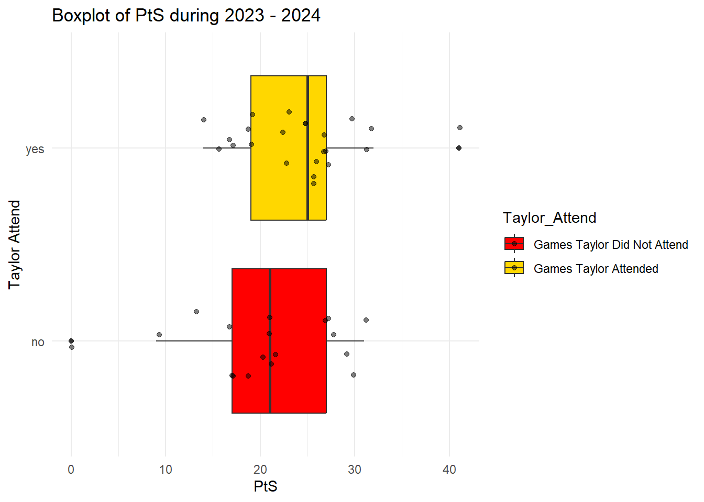
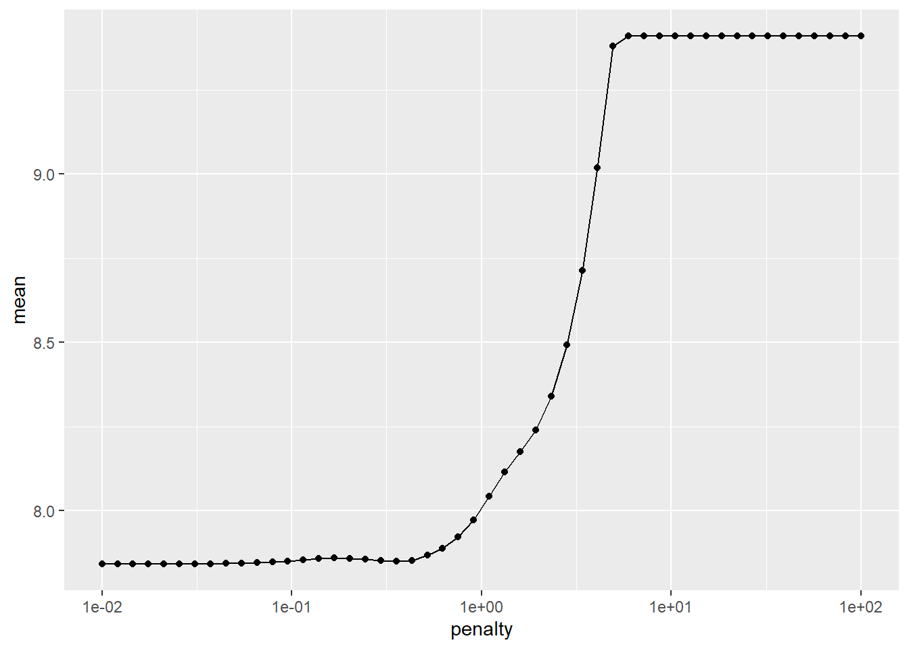

library(splines)
library(tidyverse)
library(kknn)
library(Lahman)
library(probably)
library(knockoff)
library(selectiveInference)
library(tidymodels)
library(modeltime)
library(readr)
library(stringr)
library(ggplot2)
library(dplyr)Shake It Off-ense: A Causal Analysis of Taylor Swift’s Impact on Chiefs Game Outcomes
Motivation and Context
Over the past 3 years I’ve become interested in fantasy football which has led me to explore football statistics in order to better predict the performance of teams and players. Growing up with two sisters , I also grew up listening to every new Taylor Swift album on repeat. Though these two facts about my life seem to be unrelated however, If you’ve watched a Chiefs game in the past two years or heard any news at all about Taylor Swift, you would know that they are unfortunately very related.
The world was set ablaze in September 2023 when Taylor Swift and Travis Kelce announced their relationship to the world. Ticket sales for Chiefs games as well as Travis Kelce jersey revenue jumped dramatically as the NFL marketplace was bombarded by millions of Swifties. The biggest pop-star in recent history meets the most dominating NFL team since the Tom Brady era of the Patriots. Needless to say, Taylor Swift and Travis Kelce’s high profile relationship has become a major topic in pop culture.
Taylor Swift’s presence at Chiefs games is obvious and some would say obnoxious, with no less than 3 showings a game averaging around 15 seconds a shot. If Travis Kelce is involved in a play onscreen at a game that Taylor is attending, it is almost certain that a pan to this blonde haired mega star celebrating with her friends is around the corer. This constant coverage has been met with adoration from her fans - and hostility from some Chief supporters.
Out of this cultural spotlight emerged a fascinating question: Does Taylor Swift’s attendance actually impact the Chiefs’ performance? This analysis aims to explore that question through a causal lens.
Main Objective
How does Taylor Swift’s attendance at Kansas City Chiefs games effect the offensive performance.
Packages Used In This Analysis
| Package | Use |
|---|---|
| here | to easily load and save data |
| readr | to import the CSV file data |
| dplyr | to massage and summarize data |
| rsample | to split data into training and test sets |
| ggplot2 | to create nice-looking and informative graphs |
| tidyverse | a collection of R packages designed for data science |
| kknn | for k-nearest neighbors classification and regression |
| Lahman | provides baseball statistics data for analysis |
| probably | to post-process and threshold model predictions |
| knockoff | for feature selection with controlled false discovery rate |
| selectiveInference | for valid statistical inference after model selection |
| tidymodels | a unified framework for modeling and machine learning |
| modeltime | for time series forecasting using tidymodels workflow |
| stringr | to manipulate and work with strings easily |
Data Description
The data I will be using consists of Kansas City Chiefs season performance statistics from Pro Football Reference spanning the 2013 to 2024 seasons. I am constraining the data to this time frame because 2013 marks the year Andy Reid was hired as head coach, ushering in a new era of consistent leadership and a distinct shift in the team’s playing style and strategic approach. This period provides a cohesive and relevant context for analyzing performance trends and causal impacts.
Data Dictionary
Year – The year the game took place.
Week – The week of the NFL season in which the game was played.
Day – The day of the week the game occurred.
Time – The time of day the game started.
Outcome – The result of the game (Win or Loss).
OT – Indicates whether the game went into overtime.
Rec – The team’s win-loss record at the time of the game.
Location – Indicates whether it was a home or away game.
Opp – The name of the opposing team.
PtS – Points scored by the Chiefs.
PtA – Points allowed (points scored by the opponent).
FirstD – Number of first downs achieved by the Chiefs.
TotYd – Total yards gained on offense.
PassY – Total passing yards.
RushY – Total rushing yards.
TO – Number of turnovers committed by the Chiefs.
FirstD_Alwd – First downs allowed to the opponent.
TotYd_Alwd – Total yards allowed to the opponent.
PassY_Alwd – Passing yards allowed.
RushY_Alwd – Rushing yards allowed.
TO_Alwd – Turnovers forced by the Chiefs’ defense.
ExOff – Expected offensive performance (expected points gained on offense).
ExDef – Expected defensive performance (average expected points prevented per play).
ExSpec – Expected special teams performance.
Taylor_Attend – Indicates whether Taylor Swift attended the game (Yes/No).
kcc_g_16 <- read_csv("C:/Users/caleb/OneDrive/Desktop/School/Math 437/Final Project/Project Data/kcc_g_16.txt", show_col_types = FALSE)
kcc_g_24 <- read_csv("C:/Users/caleb/OneDrive/Desktop/School/Math 437/Final Project/Project Data/kcc_g_24.txt", show_col_types = FALSE)
kcc_g_23 <- read_csv("C:/Users/caleb/OneDrive/Desktop/School/Math 437/Final Project/Project Data/kcc_g_23.txt", show_col_types = FALSE)
kcc_g_22 <- read_csv("C:/Users/caleb/OneDrive/Desktop/School/Math 437/Final Project/Project Data/kcc_g_22.txt", show_col_types = FALSE)
kcc_g_21 <- read_csv("C:/Users/caleb/OneDrive/Desktop/School/Math 437/Final Project/Project Data/kcc_g_21.txt", show_col_types = FALSE)
kcc_g_20 <- read_csv("C:/Users/caleb/OneDrive/Desktop/School/Math 437/Final Project/Project Data/kcc_g_20.txt", show_col_types = FALSE)
kcc_g_19 <- read_csv("C:/Users/caleb/OneDrive/Desktop/School/Math 437/Final Project/Project Data/kcc_g_19.txt", show_col_types = FALSE)
kcc_g_18 <- read_csv("C:/Users/caleb/OneDrive/Desktop/School/Math 437/Final Project/Project Data/kcc_g_18.txt", show_col_types = FALSE)
kcc_g_17 <- read_csv("C:/Users/caleb/OneDrive/Desktop/School/Math 437/Final Project/Project Data/kcc_g_17.txt", show_col_types = FALSE)
kcc_g_16 <- read_csv("C:/Users/caleb/OneDrive/Desktop/School/Math 437/Final Project/Project Data/kcc_g_16.txt", show_col_types = FALSE)
kcc_g_15 <- read_csv("C:/Users/caleb/OneDrive/Desktop/School/Math 437/Final Project/Project Data/kcc_g_15.txt", show_col_types = FALSE)
kcc_g_14 <- read_csv("C:/Users/caleb/OneDrive/Desktop/School/Math 437/Final Project/Project Data/kcc_g_14.txt", show_col_types = FALSE)
kcc_g_13 <- read_csv("C:/Users/caleb/OneDrive/Desktop/School/Math 437/Final Project/Project Data/kcc_g_13.txt", show_col_types = FALSE)Data Limitations
Choosing a response variable to measure offensive success is a critical first step. While several variables—such as Outcome, TotYd (total yards), and PtS (points scored)—could serve as indicators, each comes with trade-offs.
Outcome (win/loss) is influenced heavily by defensive and special teams performance, making it a poor standalone measure of offensive success. TotYd isolates offensive effort more cleanly, but it fails to account for the ultimate goal of the offense: scoring points.
PtS offers the most direct measure of offensive success, as it captures the end result of drives and includes field goals, which reflect moderate offensive effectiveness. While PtS does include occasional scores from defense and special teams (e.g., pick-sixes, safeties, return touchdowns), these are relatively rare and unlikely to significantly skew the analysis.
Ideally, we would use a variable representing offensive-only points scored, but such a measure is not available in our data. Therefore, we will proceed with PtS (points scored) as our response variable, acknowledging its limitations.
Lastly, offensive output must be interpreted in the context of the opponent’s defensive strength—30 points against a weak defense is not equivalent to 14 against a top-tier one. While we lack a “predicted offensive output” metric to directly control for this, we recognize this limitation in our model’s interpretability.
Data Wrangling
We cleaned the dataset by adjusting column names, converting week titles to numbers, and adding a manually created Taylor_Attend variable.
file_paths <- list.files(path = "C:/Users/caleb/OneDrive/Desktop/School/Math 437/Final Project/Project Data",
pattern = "kcc_g_.*\\.txt$", full.names = TRUE)
new_col_names <- c("Week", "Day", "Date", "Time", "Boxscore", "Outcome", "OT", "Rec",
"Location", "Ppp", "PtS", "PtA", "FirstD", "TotYd", "PassY", "RushY",
"TO", "FirstD_Alwd", "TotYd_Alwd", "PassY_Alwd", "RushY_Alwd",
"TO_Alwd", "ExOff", "ExDef", "ExSpec")
kcc_data <- lapply(file_paths, function(file) {
df <- read_csv(file, skip = 1, show_col_types = FALSE) # Read the file
colnames(df) <- new_col_names # Rename columns
year_suffix <- str_extract(basename(file), "\\d{2}")
full_year <- as.integer(paste0("20", year_suffix)) # Convert to 4-digit year
df <- df |> filter(Week != "Playoffs") #Removes playoff row
df <- df |> filter(Ppp != "Bye Week") #removes bie week row
df <- df |> mutate(Taylor_Attend = "no") #Adds attendance collumn
df <- df |> mutate(Year = full_year) |> # Add Year column
relocate(Year, .before = Week) # Move Year column before Week
df <- df |> mutate(
Date = paste(Date, full_year), # Combine Date and Year
Date = as.Date(Date, format = "% %d %Y") # Convert to Date format (e.g., "September 13 2013")
)
df <- df |> mutate(
Week = case_when( # Replace playoff names with sequential week numbers
Week == "Wild Card" ~ "18",
Week == "Division" ~ "19",
Week == "Conf. Champ." ~ "20",
Week == "SuperBowl" ~ "21",
TRUE ~ as.character(Week) # Keep regular weeks unchanged
)
)
return(df) # Return the modified dataframe
})New names:
New names:
New names:
New names:
New names:
New names:
New names:
New names:
New names:
New names:
New names:
New names:
• `` -> `...4`
• `` -> `...5`
• `` -> `...6`
• `` -> `...9`
• `Opp` -> `Opp...10`
• `Opp` -> `Opp...12`
• `1stD` -> `1stD...13`
• `TotYd` -> `TotYd...14`
• `PassY` -> `PassY...15`
• `RushY` -> `RushY...16`
• `TO` -> `TO...17`
• `1stD` -> `1stD...18`
• `TotYd` -> `TotYd...19`
• `PassY` -> `PassY...20`
• `RushY` -> `RushY...21`
• `TO` -> `TO...22`names(kcc_data) <- gsub(".*/|\\.txt$", "", file_paths) # Remove path and .txt extension
# Assign each dataframe to a separate variable
for (name in names(kcc_data)) {
assign(name, kcc_data[[name]])
}
Taylor_Attend23 <- c("no", "no", "yes", "yes", "no", "yes", "yes", "no", "no", "no", "no", "yes", "yes", "yes", "yes", "yes", "no", "yes", "yes", "yes", "yes")
Taylor_Attend24 <- c("yes", "yes", "no", "no", "yes", "no", "no", "yes", "yes", "no", "no", "yes", "no", "no", "yes", "no", "no", "yes", "yes", "yes")
kcc_g_23 <- kcc_g_23 |> mutate(Taylor_Attend = Taylor_Attend23)
kcc_g_24 <- kcc_g_24 |> mutate(Taylor_Attend = Taylor_Attend24)Exploratory Data Analysis
For our EDA, we focus on the Chiefs’ performance during Taylor Swift and Travis Kelce’s relationship, which began in September 2023. Since her first game attendance was on September 24, 2023, we use data from the 2023 and 2024 seasons.
To train our model, we include data from 2013 onward—the year Andy Reid became head coach. Data before 2013 is excluded, as it reflects a different era with distinct strategies and would weaken the model’s relevance to the current team.
kcc_g_train <- bind_rows(list(kcc_g_13, kcc_g_14, kcc_g_15, kcc_g_16, kcc_g_17, kcc_g_18, kcc_g_19, kcc_g_20, kcc_g_21, kcc_g_22))
kcc_g_test <- bind_rows(kcc_g_23, kcc_g_24)
kcc_g_all <- bind_rows(kcc_g_train, kcc_g_test)
kcc_g_dyn <- bind_rows(kcc_g_19, kcc_g_20, kcc_g_21, kcc_g_22, kcc_g_23, kcc_g_24)
kcc_g_taylor <- filter(kcc_g_test, Taylor_Attend == "yes")
kcc_g_taylorless <- filter(kcc_g_test, Taylor_Attend == "no")To give context as to how the Chiefs performed during his time period, here is the distribution of points scored for 2013 to 2024 seasons.
ggplot(kcc_g_all, aes(x = as.factor(Year), y = PtS, fill = as.factor(Year))) +
geom_boxplot() +
theme_minimal() +
labs(title = "Points Scored Per Game Distribution by Year",
x = "Year",
y = "Points Scored Per Game (PtS)")
We will now explore the distribution of Points scored by the Chiefs when Taylor Attended verses games she did not attend.
kcc_g_test |> group_by(Taylor_Attend) |>
summarize(
num_total = n(),
num_missing = sum(is.na(PtS)),
min = min(PtS, na.rm = TRUE),
Q1 = quantile(PtS, 0.25, na.rm = TRUE),
median = median(PtS, na.rm = TRUE),
Q3 = quantile(PtS, 0.75, na.rm = TRUE),
max = max(PtS, na.rm = TRUE),
mean = mean(PtS, na.rm = TRUE),
sd = sd(PtS, na.rm = TRUE)
)# A tibble: 2 × 10
Taylor_Attend num_total num_missing min Q1 median Q3 max mean sd
<chr> <int> <int> <dbl> <dbl> <dbl> <dbl> <dbl> <dbl> <dbl>
1 no 18 0 0 17 21 27 31 20.5 7.91
2 yes 23 0 14 19 25 27 41 24.3 6.14ggplot(data = kcc_g_test, aes(x = Taylor_Attend, y = PtS, fill = Taylor_Attend)) +
geom_boxplot() +
geom_jitter(width = 0.2, alpha = 0.5) + # Avoids overlapping points
coord_flip() +
theme_minimal() +
labs(title = "Boxplot of PtS during 2023 - 2024",
x = "Taylor Attend",
y = "PtS") +
scale_fill_manual(values = c( "no" = "red", "yes" = "gold"), labels = c("Games Taylor Did Not Attend", "Games Taylor Attended"))
As you can see, the games which Taylor attended seem to have a greater distribution than the games she did not attend with about a 4 point greater mean. We will also note that the two highest scoring games occurred when Taylor was attending and the two lowest scoring games occurred when she was not attending.
We will proceed to observe the relationship our variables have with Points Scored.
The following is a plot of Total Yards and Points Scored, with blue and red data points indicating Taylor’s attendance and non-attendance, respectively.
ggplot(kcc_g_test, aes(x = TotYd, y = PtS, color = Taylor_Attend)) +
geom_point(size = 4, alpha = 0.8) +
scale_color_manual(values = c("red", "gold")) +
labs(
title = "Chiefs Points Scored vs Total Yards",
x = "Total Yards (TotYd)",
y = "Points Scored (PtS)",
color = "Taylor Swift Attendance"
) +
theme_minimal()
Unsurprisingly, we can observe a fairly linear relationship here.
Next, we examine the relationship between the ExOff and PtS variables. While the exact definition of ExOff is unclear, it appears to reflect some measure of offensive performance. We hypothesize that ExOff represents the average expected points per offensive play in a game.
ggplot(kcc_g_test, aes(x = ExOff, y = PtS, color = Taylor_Attend)) +
geom_point(size = 4, alpha = 0.8) +
scale_color_manual(values = c("red", "gold")) +
labs(
title = "Chiefs ExOff vs Total Yards",
x = "Expected Off (ExOff)",
y = "Points Scored (PtS)",
color = "Taylor Swift Attendance"
) +
theme_minimal()
A stronger linear relationship is again observable; however, we have chosen not to include this variable in our model, as its underlying significance is unclear.
Lastly, we will observe the relationship between fist down count and Points scored.
library(ggplot2)
ggplot(kcc_g_test, aes(x = FirstD, y = PtS, color = Taylor_Attend)) +
geom_point(size = 4, alpha = 0.8) +
scale_color_manual(values = c("red", "gold")) +
labs(
title = "Chiefs First Down Count vs Total Yards",
x = "First Down Count (FirstD) ",
y = "Points Scored (PtS)",
color = "Taylor Swift Attendance"
) +
theme_minimal()
We will continue using Points Scored (PtS) as our response variable.
Causal Inference
In order to determine If Taylor Swift’s attendance at Chiefs game have a significant effect on points scored, we will perform causal inference. Here we are trying to infer the effect a treatment has on population or otherwise known as Average Treatment Effect (ATE). In our case, the treatment is Taylor Swifts Attendance, and our population is Chiefs games from 2023 to 2024. In order to determine ATE, we will use the following equation.
\[ \text{ATE} = \pi_{\text{treated}} \cdot \text{ATT} + \pi_{\text{untreated}} \cdot \text{ATU} \]
Here \(\pi\) indicates proportion not 3.14159.
ATT is defined as the average treatment effect has on the treated population. In our case, this refers to the effect Taylor Swift has on games she attended. Here is a mathematical expression of ATT.
\[ \text{ATT} = \text{E}[Y_i^1 - Y_i^0 \, | \, X_i = 1] \]
\[ \text{ATT} = [Y_{i} - \text{E}(Y_i^0) \, | \, X_i = 1] \]
Here \(Y_i^1\) is the outcome that would occur if treated—that is, the points scored if Taylor attended—and \(Y_i^0\) is the outcome that would occur if Taylor did not attend. Finally, \(X_i\) is a treatment indicator, where \(X_i = 1\) denotes games Taylor attended.
ATU is defined as average treatment effect on the untreated populating. In our case this refers to the effect Taylor Swift would have had at games she did not attend. The following is a mathematical expression of ATU.
\[ \text{ATU} = \text{E}[Y_i^1 - Y_i^0 \, | \, X_i = 0] \] \[ \text{ATU} = [\text{E}(Y_i^1) - Y_i \, | \, X_i = 0] \]
The following data frame presents the data we have so far for these calculations.
kcc_disp <- kcc_g_test |>
dplyr::select(
Year,
Ppp,
PtS,
Taylor_Attend
)
kcc_disp <- kcc_disp |> mutate(Taylor_Outcome_Y1 = (ifelse(Taylor_Attend == "yes", PtS, NA)))
kcc_disp <- kcc_disp |> mutate(Taylorless_Outcome_Y0 = (ifelse(Taylor_Attend == "no", PtS, NA)))
kcc_disp# A tibble: 41 × 6
Year Ppp PtS Taylor_Attend Taylor_Outcome_Y1 Taylorless_Outcome_Y0
<int> <chr> <dbl> <chr> <dbl> <dbl>
1 2023 Detroit Li… 20 no NA 20
2 2023 Jacksonvil… 17 no NA 17
3 2023 Chicago Be… 41 yes 41 NA
4 2023 New York J… 23 yes 23 NA
5 2023 Minnesota … 27 no NA 27
6 2023 Denver Bro… 19 yes 19 NA
7 2023 Los Angele… 31 yes 31 NA
8 2023 Denver Bro… 9 no NA 9
9 2023 Miami Dolp… 21 no NA 21
10 2023 Philadelph… 17 no NA 17
# ℹ 31 more rowsTo calculate the theoretical ATE, we would need both the points scored when she attended (Taylor_Outcome_Y1) and the points scored when she did not attend (Taylorless_Outcome_Y0). Since each game only has one of these two conditions, ATE is impossible to calculate without a time machine and an incredible amount of persuation.
To solve this problem, we will estimate ATE with the following formula.
\[ \text{E}(\text{ATE}) = \pi_{\text{treated}} \cdot \text{E}\left[Y_i - \text{E}(Y_i^0)\right] + \pi_{\text{untreated}} \cdot \text{E}\left[\text{E}(Y_i^1) - Y_i\right] \]
In order to determine \(\text{E}(ATE)\) and to fill in he rest of our data frame, we will use modeling techniques to determine \(\text{E}(Y_i^0 \, | \, X_i = 1)\) and \(\text{E}(Y_i^1 \, | \, X_i = 0)\)
Modeling
We begin with a Lasso model to identify key response variables for future analysis, using data from the 2013 to 2022 seasons.
kcc_lasso_model <- linear_reg(mode = "regression", engine = "glmnet",
penalty = tune(),
mixture = 1)
kcc_lasso_recipe <- recipe(
PtS ~ PtA
+ FirstD
+ TotYd
+ PassY
+ RushY
+ FirstD_Alwd
+ TotYd_Alwd
+ PassY_Alwd
+ RushY_Alwd,
data = kcc_g_train
) |>
step_normalize(all_numeric_predictors()) |>
step_dummy(all_nominal_predictors())
kcc_lasso_wflow <- workflow() |>
add_model(kcc_lasso_model) |>
add_recipe(kcc_lasso_recipe)
kcc_cv <- vfold_cv(kcc_g_train, v = 10)
kcc_lasso_tune <- tune_grid(kcc_lasso_model,
kcc_lasso_recipe,
resamples = kcc_cv,
grid = grid_regular(penalty(range = c(-2, 2)), levels = 50))kcc_lasso_tune |>
collect_metrics() |>
filter(.metric == "rmse") |>
ggplot(mapping = aes(x = penalty, y = mean)) + geom_point() + geom_line() +
scale_x_log10()
lasso_best <- kcc_lasso_tune |>
select_best(
metric = "rmse"
)
lasso_best# A tibble: 1 × 2
penalty .config
<dbl> <chr>
1 0.356 Preprocessor1_Model20lasso_wflow_final <- kcc_lasso_wflow |>
finalize_workflow(parameters = lasso_best) kcc_lasso_fit <- lasso_wflow_final |>
fit(data = kcc_g_train)kcc_lasso_coef <- kcc_lasso_fit |>
broom::tidy()
kcc_lasso_coef # A tibble: 10 × 3
term estimate penalty
<chr> <dbl> <dbl>
1 (Intercept) 27.8 0.356
2 PtA 0 0.356
3 FirstD 0.707 0.356
4 TotYd 3.70 0.356
5 PassY 0 0.356
6 RushY 0.804 0.356
7 FirstD_Alwd 1.15 0.356
8 TotYd_Alwd 0 0.356
9 PassY_Alwd 0.521 0.356
10 RushY_Alwd -0.243 0.356Here we can see that important variables include Points Allowed (PtA), First Down Count (FirstD), Total Yards (TotYd), total Rusing Yards (RushY), First Downs Allowed (FirstD_Alwd), Passing Yards Allowed (PassY_Alwd) and Rushing Yards Allowed (RushY_Alwd). We will proceed to use these variables in our following models.
Training Causal Models
First We will train our “Taylor Model” with games that Taylor attended.
kcc_taylor_model <- linear_reg(mode = "regression", engine = "lm")
kcc_taylor_wflow <- workflow() |>
add_model(kcc_taylor_model)
kcc_taylor_recipe <- recipe(
PtS ~ PtA
+ FirstD
+ TotYd
+ RushY
+ FirstD_Alwd
+ PassY_Alwd
+ RushY_Alwd,
data = kcc_g_taylor
)
kcc_taylor_wflow <- kcc_taylor_wflow |>
add_recipe(kcc_taylor_recipe)
kcc_taylor_fit <- fit(kcc_taylor_wflow, data = kcc_g_taylor)
kcc_taylor_fit══ Workflow [trained] ══════════════════════════════════════════════════════════
Preprocessor: Recipe
Model: linear_reg()
── Preprocessor ────────────────────────────────────────────────────────────────
0 Recipe Steps
── Model ───────────────────────────────────────────────────────────────────────
Call:
stats::lm(formula = ..y ~ ., data = data)
Coefficients:
(Intercept) PtA FirstD TotYd RushY FirstD_Alwd
1.434340 0.206344 0.393538 0.030346 0.011989 -0.438981
PassY_Alwd RushY_Alwd
0.009074 0.037395 Now we will train our “Taylor-less” model with games Taylor did not attend.
kcc_taylorless_model <- linear_reg(mode = "regression", engine = "lm")
kcc_taylorless_wflow <- workflow() |>
add_model(kcc_taylorless_model)
kcc_taylorless_recipe <- recipe(
PtS ~ PtA
+ FirstD
+ TotYd
+ RushY
+ FirstD_Alwd
+ PassY_Alwd
+ RushY_Alwd,
data = kcc_g_taylorless
)
kcc_taylorless_wflow <- kcc_taylorless_wflow |>
add_recipe(kcc_taylorless_recipe)
kcc_taylorless_fit <- fit(kcc_taylorless_wflow, data = kcc_g_taylorless)
kcc_taylorless_fit══ Workflow [trained] ══════════════════════════════════════════════════════════
Preprocessor: Recipe
Model: linear_reg()
── Preprocessor ────────────────────────────────────────────────────────────────
0 Recipe Steps
── Model ───────────────────────────────────────────────────────────────────────
Call:
stats::lm(formula = ..y ~ ., data = data)
Coefficients:
(Intercept) PtA FirstD TotYd RushY FirstD_Alwd
-8.58012 -0.69207 2.23804 -0.05511 -0.02784 -0.17735
PassY_Alwd RushY_Alwd
0.08502 0.05225 Predicting Response
We will now use our Taylor and Taylor-less models to determine the missing \(\text{E}(Y_i^0 \, | \, X_i = 1)\) and \(\text{E}(Y_i^1 \, | \, X_i = 0)\) values.
We will start by finding \(\text{E}(Y_i^1 \, | \, X_i = 0)\)
# augment is in the broom package, loaded with tidymodels
kcc_pred_taylorless <- kcc_taylor_fit |>
augment(
new_data = kcc_g_taylorless,
)
kcc_pred_taylorless |>
dplyr::select(
Year,
Ppp,
PtS,
.pred
)# A tibble: 18 × 4
Year Ppp PtS .pred
<int> <chr> <dbl> <dbl>
1 2023 Detroit Lions 20 21.5
2 2023 Jacksonville Jaguars 17 20.7
3 2023 Minnesota Vikings 27 19.2
4 2023 Denver Broncos 9 20.7
5 2023 Miami Dolphins 21 17.0
6 2023 Philadelphia Eagles 17 25.4
7 2023 Las Vegas Raiders 31 25.5
8 2023 Los Angeles Chargers 13 15.1
9 2024 Atlanta Falcons 22 22.4
10 2024 Los Angeles Chargers 17 19.3
11 2024 San Francisco 49ers 28 23.3
12 2024 Las Vegas Raiders 27 22.2
13 2024 Buffalo Bills 21 19.6
14 2024 Carolina Panthers 30 27.7
15 2024 Los Angeles Chargers 19 19.5
16 2024 Cleveland Browns 21 20.3
17 2024 Pittsburgh Steelers 29 22.9
18 2024 Denver Broncos 0 10.6These are the predicted points scored by the Chiefs in 2023 and 2024 games that Taylor DID NOT attend, based on our model trained with games that Taylor DID attend.
Now to populate the missing values under our Taylor-less outcome with these predicted values.
w <- 1
for (i in 1:nrow(kcc_disp)) {
if (is.na(kcc_disp$Taylor_Outcome_Y1[i])) {
kcc_disp$Taylor_Outcome_Y1[i] <- kcc_pred_taylorless$.pred[w]
w <- w + 1
}
}
kcc_disp# A tibble: 41 × 6
Year Ppp PtS Taylor_Attend Taylor_Outcome_Y1 Taylorless_Outcome_Y0
<int> <chr> <dbl> <chr> <dbl> <dbl>
1 2023 Detroit Li… 20 no 21.5 20
2 2023 Jacksonvil… 17 no 20.7 17
3 2023 Chicago Be… 41 yes 41 NA
4 2023 New York J… 23 yes 23 NA
5 2023 Minnesota … 27 no 19.2 27
6 2023 Denver Bro… 19 yes 19 NA
7 2023 Los Angele… 31 yes 31 NA
8 2023 Denver Bro… 9 no 20.7 9
9 2023 Miami Dolp… 21 no 17.0 21
10 2023 Philadelph… 17 no 25.4 17
# ℹ 31 more rowsWe will now find the value of \(\text{E}(Y_i^0 \, | \, X_i = 1)\)
# augment is in the broom package, loaded with tidymodels
kcc_pred_taylor <- kcc_taylorless_fit |>
augment(
new_data = kcc_g_taylor,
)
kcc_pred_taylor |>
dplyr::select(
Year,
Ppp,
PtS,
.pred
)# A tibble: 23 × 4
Year Ppp PtS .pred
<int> <chr> <dbl> <dbl>
1 2023 Chicago Bears 41 36.0
2 2023 New York Jets 23 25.3
3 2023 Denver Broncos 19 21.5
4 2023 Los Angeles Chargers 31 30.1
5 2023 Green Bay Packers 19 30.0
6 2023 Buffalo Bills 17 23.4
7 2023 New England Patriots 27 17.1
8 2023 Las Vegas Raiders 14 10.9
9 2023 Cincinnati Bengals 25 4.40
10 2023 Miami Dolphins 26 33.5
# ℹ 13 more rowsThese are the predicted points scored by the Chiefs in 2023 and 2024 games if Taylor had not attended them.
We will now populate the last of the missing data in our data frame with these predicted values.
w <- 1
for (i in 1:nrow(kcc_disp)) {
if (is.na(kcc_disp$Taylorless_Outcome_Y0[i])) {
kcc_disp$Taylorless_Outcome_Y0[i] <- kcc_pred_taylor$.pred[w]
w <- w + 1
}
}
kcc_disp# A tibble: 41 × 6
Year Ppp PtS Taylor_Attend Taylor_Outcome_Y1 Taylorless_Outcome_Y0
<int> <chr> <dbl> <chr> <dbl> <dbl>
1 2023 Detroit Li… 20 no 21.5 20
2 2023 Jacksonvil… 17 no 20.7 17
3 2023 Chicago Be… 41 yes 41 36.0
4 2023 New York J… 23 yes 23 25.3
5 2023 Minnesota … 27 no 19.2 27
6 2023 Denver Bro… 19 yes 19 21.5
7 2023 Los Angele… 31 yes 31 30.1
8 2023 Denver Bro… 9 no 20.7 9
9 2023 Miami Dolp… 21 no 17.0 21
10 2023 Philadelph… 17 no 25.4 17
# ℹ 31 more rowsNow we will compute \(\text{E}(ATT) = \text{E}\left[Y_i - \text{E}(Y_i^0) \, | \, X = 1\right]\) and \(\text{E}(ATU) = \text{E}\left[\text{E}(Y_i^1) - Y_i \, | \, X = 0\right]\)
E_ATT <- mean(kcc_pred_taylor$PtS - kcc_pred_taylor$.pred)
E_ATT[1] 0.1398794E_ATU <- mean(kcc_pred_taylorless$.pred - kcc_pred_taylorless$PtS)
E_ATU[1] 0.2199924We will now determine the proportion of games Taylor attended and did not attend.
pi_treated <- sum(kcc_disp$Taylor_Attend == "yes") / nrow(kcc_disp)
pi_treated[1] 0.5609756 pi_untreated <-sum(kcc_disp$Taylor_Attend == "no") / nrow(kcc_disp)
pi_untreated[1] 0.4390244Now using the previous equation,
\[ \text{E}(\text{ATE}) = \pi_{\text{treated}} \cdot \text{E}\left[Y_i - \text{E}(Y_i^0)\right] + \pi_{\text{untreated}} \cdot \text{E}\left[\text{E}(Y_i^1) - Y_i\right] \]
we get an estimated ATE of:
E_ATE <- pi_treated * E_ATT + pi_untreated * E_ATU
E_ATE[1] 0.175051Insights
An Average Treatment Effect (ATE) of 0.175 suggests that Taylor Swift’s presence at Kansas City Chiefs games during the 2023–2024 seasons was associated with a 0.175-point increase in points scored by the team. However, this is not a statistically or practically significant effect. Out of all 41 games played across those two seasons, only one game was decided by a single point.
That game represents the only scenario in which her estimated impact might have plausibly influenced the outcome. Even so, it is highly unlikely that her attendance alone would have been enough to change the result.
A 0.175-point boost amounts to just a 0.77% increase over the Chiefs’ average score during the 2023 and 2024 seasons — a marginal effect. There are many other factors and strategies that could be pursued to increase scoring more effectively and meaningfully.
Chief_Losses <- kcc_g_test |>
filter(Outcome == "L", abs(PtA - PtS) < 2)
Chief_Losses |> dplyr::select(Year, Week, Ppp, PtS, PtA, Outcome, Taylor_Attend)# A tibble: 1 × 7
Year Week Ppp PtS PtA Outcome Taylor_Attend
<int> <chr> <chr> <dbl> <dbl> <chr> <chr>
1 2023 1 Detroit Lions 20 21 L no An Average Treatment Effect of .175 suggests that Taylor Swifts presence at Kansas City Chiefs games from 2023 to 2024 was responsible for a .175 increase in Points Scored by the Chiefs. This is not a statistically significant effect. In all 41 games of the Chief’s 2023 and 2024 seasons, only game came down to 1 point.
In summary, the increase in performance attributed to Taylor Swift’s attendance is neither impactful nor actionable, and is unlikely to have meaningfully affected game outcomes.
Limitations and Future Work
This study has several limitations that should be considered, along with opportunities for further research
Firstly, there is only a small amount of data available to perform inference of Taylor Swifts impact on the Chiefs. While a sufficient amount is used to discover key variables (181 games from 2013 - 2022) in our LASSO model, there is only 41 games available in season 2023 and 2024. We are then forced to train our Causal Models on about half of the remaining data, which leads to inaccurate estimates for our prediction of expected ATE. Assuming their relationship progresses, a more accurate expected ATE will be accessible with around an additional 20 games to train our models on.
Another concern arisies in the assumptions we make when determining the expected ATT and ATU. When deriving these values, we are assuming there are no other confounding variables contributing to the difference in predicted and actual points scored other than Taylor Swifts Attendance and some amount of irreducible error. This however is unlikely as there are likely multiple factors that contribute to the success of the Chiefs. Some of these factors may include weather, schedule, timezone, rivalries etc. Most of these factors are unmeasured by the available data set, therefore cannot contribute to t he accuracy of a future model.
As stated earlier, our choice of points scored as a response variable indicating the success of the Chief’s offense is flawed. There are multiple factors that contribute to the Chiefs scoring more points that are not associated with the offense, such as opposing defensive strength. It is likely that the chiefs will score more points against teams with a weaker defense. In a future study I would like to explore reponse variables that measure Offensive performance relative to defensive strength. A variable reassuring difference between expected offensive points and actual offensive points would be a stronger response variable.
Another issue with using points scored as a response variable is that it include points scored by the entire team. This includes pick sixes, fumble recoveries for touchdowns and safeties, and extra points. thus, points scored also partially measures the success of the defense and special teams. Using another data set that has strictly offensive points scored would solve this problem.